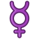

<!DOCTYPE html><html lang="es"><head><meta charset="UTF-8"><meta http-equiv="X-UA-Compatible" content="IE=edge"><meta name="viewport" content="width=device-width, initial-scale=1.0"><title>LGBTIQ</title><link href="https://cdn.jsdelivr.net/npm/bootstrap@5.1.3/dist/css/bootstrap.min.css" rel="stylesheet" integrity="sha384-1BmE4kWBq78iYhFldvKuhfTAU6auU8tT94WrHftjDbrCEXSU1oBoqyl2QvZ6jIW3" crossorigin="anonymous">
<script src="js/jquery.min.js"></script>
<script src="js/popper.min.js"></script>
<script src="js/bootstrap.min.js"></script>
<script src="js/main.js" type="module"></script>
<link rel="stylesheet" href="css/styles.css">
<link rel="stylesheet" href="css/boxes.css"></head></html><body> <nav class="navbar navbar-expand-lg navbar-light bg-darkm">
<div class="container-fluid"><a class="navbar-brand" href="inicio.html"></a><button class="navbar-toggler" type="button" data-bs-toggle="collapse" data-bs-target="#navbarSupportedContent" aria-controls="navbarSupportedContent" aria-expanded="false" aria-label="Toggle navigation">
<span class="navbar-toggler-icon"></span>
</button>
<div class="collapse navbar-collapse" id="navbarSupportedContent">
<ul class="navbar-nav me-auto mb-2 mb-lg-0">
<li class="nav-item">
<a class="nav-link active" aria-current="page" href="inicio.html">Inicio</a>
</li>
<li class="nav-item">
<a class="nav-link" href="orientacion.html">Orientación sexual</a>
</li>
<li class="nav-item">
<a class="nav-link" href="generos.html">Géneros</a>
</li>
<li class="nav-item">
<a class="nav-link " href="identidad.html" tabindex="-1" aria-disabled="true">Identidad</a>
</li>
<li class="nav-item">
<a class="nav-link " href="homofobia.html" tabindex="-1" aria-disabled="true">Homofobia</a>
</li>
<li class="nav-item">
<a class="nav-link " href="quiz.html" tabindex="-1" aria-disabled="true">Quiz</a>
</li>
<li class="nav-item">
<a class="nav-link " href="fecha.html" tabindex="-1" aria-disabled="true">Fechas</a>
</li>
<li class="nav-item">
<a class="nav-link " href="amnistia.html" tabindex="-1" aria-disabled="true">Amnistía</a>
</li>
<li class="nav-item">
<a class="nav-link " href="creditos.html" tabindex="-1" aria-disabled="true">Créditos</a>
</li>
</ul>
<input class="form-control me-2" id="search" type="search" autocomplete="off" placeholder="Buscar" aria-label="Search">
<section id="search-results">
</section>
</div>
</div>
</nav><section class="article"><h1>Géneros</h1><p>Se refiere a los aspectos socialmente atribuidos según el sexo de una persona (masculino o femenino). Las nociones de masculinidad o feminidad son construcciones socioculturales a partir de un hecho biológico como el sexo, y las personas aprenden a «ser varón» o a «ser mujer» mediante el proceso de socialización</p><h2 class="article__subtitle">Tipos de género</h2><p class="article__text">Los géneros son:</p><ul class="article__list"><li> Masculino </li><li> Femenino</li><li> No binario</li></ul></section></body>